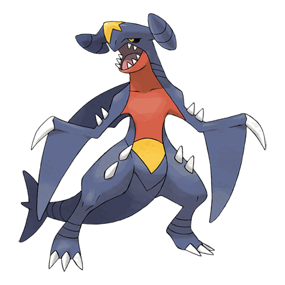

Garchomp Weakness (2x / 4x)
Ice 4x Dragon Fairy
#445 · Dragon / Ground · Mach Pokemon · Gen 4
Garchomp is the dragon that made a champion's reputation: 130 Attack, 102 Speed, and a Dragon/Ground typing with one very obvious hole in it.

BST 600
Abilities: Sand Veil · Rough Skin (hidden) · Evolution stage: final
The matchup columns come from the 18-type grid on the Pokemon Type Chart, Electric immunity included.
Ice 4x Dragon Fairy
Fire Poison Rock
Electric
Charizard covers the other famous dragon-adjacent attacker, and Greninja is a faster breaker from a later generation.
The 600-total land shark
Number 445 arrived with Generation 4 and the Sinnoh dex, and it ends a three-stage line that starts at Gible. Gabite is the middle step, Garchomp is the finish, and the abilities are Sand Veil with Rough Skin as the hidden option. Nothing evolves out of it.
It is a 600-total pseudo-legendary, the same class as Dragonite and Tyranitar, and it is the ace of the Sinnoh champion in Diamond, Pearl and Platinum. That association did most of the work in making it famous: one trainer's team made an entire Pokemon look unbeatable for a generation.
Three types hurt it: Ice, Dragon and Fairy. Three come back reduced: Fire, Poison and Rock. Electric does nothing at all, which is the free switch-in the Ground half buys.
Ice is the one that lands hardest of the three, because the two halves of the typing have no answer to it between them. Fairy was not part of the game until Generation 6, so the typing was considerably safer before it existed, and that is worth knowing when reading older team advice.
The spread runs 108 HP, 130 Attack, 95 Defense, 80 Special Attack, 85 Special Defense and 102 Speed. Attack and Speed carry it: at 102 it outpaced almost everything in the dex when it was released, and it still moves before the majority of Pokemon today.
The bulk is real but unremarkable, and the special side is the softer half. It survives a hit when it needs to, but it is not built to trade blows with dedicated walls, and 80 Special Attack means special sets exist without ever being the better option.
Sand Veil raises its evasion while a sandstorm is blowing, which is a defensive trick that only works on a team built to keep the weather up. Rough Skin, the hidden ability, damages any attacker that makes contact, which is a quieter effect that works in every battle.
In practice Rough Skin is the pick most players want, because it needs no setup and it punishes the physical attackers that Garchomp is most worried about. Sand Veil turns a weather team into a much harder matchup, but it does nothing on its own.
The line is level-based and long: Gible becomes Gabite at 24 and Gabite becomes Garchomp at 48. Gible is a rare encounter in the Sinnoh games, so a run that wants this Pokemon usually has to hunt for the first stage rather than find it on the way through.
Two full evolutions on a 600-total Pokemon means a long stretch of carrying something small. Gabite in particular sits in the awkward middle, which is the price every three-stage dragon charges for its final form.
Draft the team in the Pokemon Team Picker and let the Random Pokemon Picker cover any encounter you have not locked in. For runs that end when a Pokemon faints, the Nuzlocke Team Builder keeps the bookkeeping honest.
The Pokemon Nature Chart and Pokemon IV Calculator are where a spread gets settled, and the Pokemon Wheel Spinner exists for the calls that do not deserve a calculator.
Rounding out the suite: Pokemon Shiny Odds for the rates, the Random Mega Pokemon Generator for the larger forms, the Random Shiny Pokemon Generator for an automated hunt, and Who's That Pokemon for the guessing.
Garchomp is a fast physical breaker, so it wants to be paired with something that handles the special side. It also wants Fairy and Ice coverage kept away from it, which is a job for teammates rather than for its own moveset.
The Electric immunity is the gift that keeps giving. Any opponent leaning on Thunderbolt or Volt Switch has to think twice, and that free switch-in is often worth more than the raw stats, because it converts a defensive turn into an offensive one.
Ice, Dragon and Fairy are all common attacking types. That means Garchomp is rarely unanswerable in the way its reputation suggests: almost every serious team carries a way to hit it hard, and it has to be played around them.
Fairy in particular changed the shape of the matchup. Before Generation 6 the worst case was an Ice move and a speed tie against another dragon; now an entire type can switch in and threaten it, which is the main reason it is a strong Pokemon rather than an automatic win.
Send it in after the opponent's Ice and Fairy users are gone, or on an Electric move it can ignore. From there 130 Attack and 102 Speed do the rest: it hits first against most of the field and hits hard enough that the answer usually needs to be a resistant wall rather than a counterattack.
Everything about the Pokemon rewards setup turns. Once its checks are removed, it is one of the fastest and hardest-hitting things in the dex, and until then it is a Pokemon you have to nurse carefully through the middle of a fight.
FAQ
Garchomp is a Dragon and Ground type. That combination gives it three weaknesses, three resistances and a complete immunity to Electric moves.
Ice, Dragon and Fairy all land for double damage. Ice is the worst of the three because neither half of the typing resists it. Fire, Poison and Rock come back reduced.
Gible becomes Gabite at level 24, and Gabite becomes Garchomp at level 48. No items and no trades are involved, just two long level climbs.
Sand Veil is the standard ability and Rough Skin is the hidden one. Sand Veil raises evasion in a sandstorm, while Rough Skin deals damage back to any attacker that makes contact with it.
Three stages: Gible, Gabite, Garchomp, with level 48 at the end. The chart stops there because nothing evolves out of Garchomp.
Hitting hard and hitting first. 130 Attack with 102 Speed is a combination few Pokemon can answer on stats alone, and the Electric immunity gives it a free way into a fight.